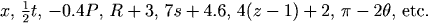
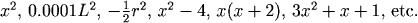
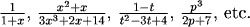
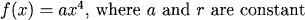
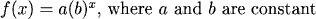
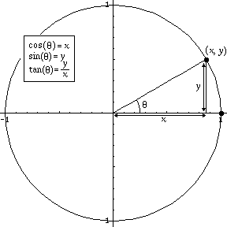
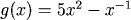

Recognizing the Common Types of Functions
Whenever we can classify a function as one of the familiar types such as quadratic or trigonometric, we know it will have certain well-known properties. For example, a trigonometric function will be periodic. As you learn to use the vocabulary of functions more and more precisely, it will be easier for you to read mathematics with genuine understanding. When you are first presented with any formula, you should try to establish what type of a function it describes. This may require you to rewrite the function in order to convert it into a standard form.
Linear Functions
The form of a linear function is easily recognizable:

Quadratic Functions
A function is quadratic if it can be put in the form

Note also that a must be non-zero -- if \(a\) is zero, we just have a line.
Cubic Functions

A function is cubic if it can be put in the form

Note again that \(a\) must be non-zero.
Polynomial Functions

A polynomial function can be written in the form

where \(n\) is a non-negative integer (note that this means that all of the exponents are integers), and all of the coefficients are constants. Of course, linear, quadratic and cubic functions are all also polynomials.
Rational Functions
All of the four preceding types (linear, quadratic, cubic, polynomial) are special cases of the broader category called rational functions, which is made up of all quotients of polynomials. The rational functions can be written in the form

Power Functions

A power function is a function formed by raising a variable to a constant power and then multiplying by a constant -- which may be one. Power functions can therefore be written in the form
Note that \(a\), and \(r\) are real numbers.
Exponential Functions

These functions are formed in a different way from power functions. An exponential function is a constant raised to a variable power (and then multiplying by a constant). An exponential function can therefore be written in the form
Note that \(b\) must be positive.
Logarithmic Functions

These are easy to recognize because the name of the function is always included in the expression. The definitions are
| \(f(x) = \log(x)\) | the inverse of the exponential \(10^x\) |
| \(f(x) = \ln(x)\) | the inverse of the exponential \(e^x\) |
Remember that an expression like ln(3) is a constant!
Trigonometric Functions

Trigonometric functions are designated by name in mathematical writing. The definitions, which refer to the unit circle, are



Practice
Question 2:
Question 3:
Question 4:
Question 5:
Question 6:
Question 7:
Question 8:
Question 9:
Return to Main